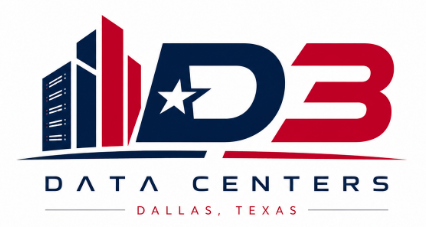

This document is the D3 Phase 1 New Hire Onboarding Framework, a corporate-ready, operationally complete onboarding program for every person who will enter the D3 Dallas data center during Phase 1: Build-Out Mobilization and Site Readiness. It was created to ensure that D3's first wave of personnel, drawn from at least seven distinct organizations including D3 direct staff, a general contractor, multiple MEP subcontractors, a low-voltage/cabling contractor, a commissioning agent, a logistics vendor, and an early operations team, arrive with a consistent baseline of safety knowledge, site access credentials, role-specific technical readiness, and documentation competency before performing any work.
Data center build-outs for hyperscale and AI infrastructure clients operate on compressed schedules with near-zero tolerance for rework, safety incidents, or documentation failures. The gap between a well-onboarded workforce and a poorly onboarded one is measured not in training hours but in schedule weeks, safety events, and client confidence. This framework closes that gap.
| # | Outcome | What It Means in Practice |
|---|---|---|
| 1 | Lifecycle Clarity | Every D3 Phase 1 employee and contractor understands the full build-out lifecycle (Phase 0 through Phase 7), where Phase 1 fits, and what must be true before Phase 1 ends and Phase 2 begins. |
| 2 | Phase 1 Workforce Readiness | All 28+ Phase 1 roles are credentialed, safety-cleared, and operationally oriented before performing independent work. The 9-role Minimum Viable Team is onboarded before general site access opens. |
| 3 | Role-Based Onboarding Requirements | Each of the seven Phase 1 role groups completes a curriculum track built specifically for their hazard exposure, technical responsibilities, and documentation obligations, not a generic construction orientation. |
| 4 | Corporate-Ready Program | D3 HR, EHS, project management, and site leadership can deploy, audit, and report on this program. All regulatory requirements are cited, all compliance distinctions are preserved, and the framework integrates with LMS platforms and existing HR workflows. |
| # | Risk | How This Framework Prevents It |
|---|---|---|
| 1 | Unqualified workers gaining site access before safety and credentialing gates are cleared | Day 1 Clearance Gate requires completion of all R-Pre modules, TDLR license verification for MEP trades, background check, and badging before any individual enters a work zone. No exceptions. |
| 2 | Cross-trade documentation failures that invalidate commissioning evidence | Universal Curriculum Module 17 (Documentation Workflow) and role-specific document training ensure every person understands how RFIs, submittals, daily reports, and punch-list items flow before they generate or sign off on any record. |
| 3 | Late-engaged operations and customer-readiness staff who cannot accept a proper turnover package | Group 7 (Early Operations and Customer-Readiness) is identified as a Tier 1 onboarding priority. The Customer Readiness Lead, Facilities Operations Liaison, and DCIM/BMS Specialist are onboarded in the first mobilization wave, not at project close. |
| Audience | Primary Sections |
|---|---|
| D3 Executive Leadership | Sections 1, 2, 3, 14, 15, 16 |
| HR / People Operations | Sections 5, 6, 10, 11, 12, 17 |
| EHS Manager | Sections 6, 8, 9, 12, 14 |
| Site Project Manager / Superintendent | Sections 3, 4, 5, 9, 10, 12, 15 |
| GC / Subcontractor Leadership | Sections 4, 6, 7, 8, 12, 13 |
| LMS / Training Administrator | Sections 6, 7, 8, 13, Appendix A |
| New Hire or Contractor | Section 11, then role-specific track in Section 7 |
A data center build-out begins when the building shell contractor substantially completes and turns over the structure, typically meaning a watertight envelope, base-building MEP rough-ins to a defined scope boundary, and a certificate of occupancy or temporary certificate for the shell. From that point, a specialized build-out contractor or delivery organization executes seven sequential but partially overlapping phases before the end customer takes operational possession.
| Phase | Working Name | Primary Purpose | Typical Duration | Key Exit Criteria |
|---|---|---|---|---|
| Phase 0 | Building Shell & Base Building Completion | Civil, structure, envelope, base-building MEP to defined scope boundary, life-safety systems rough-in, site utilities at building entry points. | 12–24 months | Substantial completion certificate; AHJ inspection signed; utility interconnect agreements executed; site control transferred to build-out contractor. |
| Phase 1 | Build-Out Mobilization and Site Readiness | Establish site control, EHS program, logistics infrastructure, project controls, QA/QC processes, commissioning planning, and design-readiness for MEP rough-in. No construction trades should begin installation work until Phase 1 exit criteria are met. | 4–8 weeks | Site safety plan approved; TDLR licenses verified; all Tier 1 and Tier 2 roles onboarded; mobilization infrastructure complete; drawing packages issued for construction (IFC); commissioning plan in Levels 1–2; ERCOT permanent-power timeline confirmed. |
| Phase 2 | MEP Rough-In & Critical Infrastructure Installation | Electrical distribution, mechanical systems, precision cooling infrastructure, fire protection, controls raceways, grounding and bonding, equipment placement and setting. | 12–20 weeks | MEP rough-in inspection approved by AHJ; QA/QC milestone sign-offs complete; equipment submittals approved; commissioning Levels 1–3 underway. |
| Phase 3 | White-Space Fit-Out & ICT Infrastructure | Raised floor (if applicable), cable containment, ladder rack, overhead raceways, hot/cold aisle containment, structured cabling horizontal and vertical distribution, fiber backbone, patch fields, labeling. | 8–16 weeks (overlaps Phase 2 closeout) | Cable pathways tested and labeled; BICSI 002 documentation package complete; ESD protocols in place; white-space access control active. |
| Phase 4 | Equipment Installation & System Start-Up | UPS systems, switchgear, PDUs, generators, CRAHs/chillers/cooling towers, BMS/EPMS installation, network and server hardware deployment (where in scope), arc-flash studies and labeling. | 8–14 weeks | NFPA 70E arc-flash labels affixed; equipment start-up reports issued; commissioning Level 4 initiated; ERCOT interconnection energization authorized. |
| Phase 5 | Functional Testing & Commissioning | Component-level verification, pre-functional checklists, functional performance testing, system-level testing, QA/QC deficiency closeout, commissioning evidence packages. | 6–10 weeks | All commissioning Level 4 checklists complete; deficiency log at zero open critical items; commissioning Level 5 initiated. |
| Phase 6 | Integrated Systems Testing | Load-bank testing, failover and redundancy validation, emergency scenario testing, controls response verification, customer-specific acceptance test protocols. | 4–8 weeks | All IST scenarios passed; customer acceptance test protocol executed; punch list at zero Severity 1 items. |
| Phase 7 | Turnover, Operations Readiness & Customer Handoff | Final O&M documentation package, training delivery to operations staff, SOP/MOP/EOP transfer, DCIM/BMS system handoff, client acceptance, certificate of readiness. | 4–6 weeks | Customer acceptance signed; O&M packages delivered; CMMS/DCIM populated; all spare parts inventoried; operations staff trained and certified; building permit finaled. |
Phase 1 is not a construction phase. It is a readiness phase. Every installation, inspection, test, and commissioning activity in Phases 2 through 7 depends on decisions, documents, credentials, and site controls established in Phase 1. A Superintendent who arrives without understanding the permit-to-work system, a Commissioning Manager who doesn't receive the IFC drawing package until week six, or a Logistics Manager who sets up the laydown yard in a location that blocks equipment delivery routes, these are Phase 1 failures that cannot be recovered without schedule impact. The onboarding program exists to prevent them.
Phase 1: Build-Out Mobilization and Site Readiness formally begins when the building shell contractor executes a written site turnover to D3 or the build-out contractor, supported by a punch-list-cleared substantial completion certificate, an executed AHJ inspection record for the shell scope, and confirmation that base-building utility interconnects are in place. It ends when all Phase 1 exit criteria are satisfied and the site is formally authorized to begin MEP rough-in.
| Condition Type | Requirement | Basis |
|---|---|---|
| Start: Site Control | Written site turnover document executed; access control transferred to build-out team | D3 |
| Start: Structural | Building shell substantially complete; AHJ inspection signed; certificate of occupancy (shell) issued or equivalent | L Dallas Building Inspection / AHJ |
| Start: Utilities | Temporary power available; ERCOT permanent power interconnection timeline confirmed in writing with Oncor | D3 |
| End: Safety | Site Safety Plan approved; Emergency Action Plan posted; PTW system activated; all Tier 1 roles safety-cleared | L OSHA 29 CFR 1926.20, 1926.35 |
| End: Licensing | TDLR license verification complete for all MEP subcontractor leads; documentation filed | L Texas Occ. Code Ch. 1305, 1302 |
| End: Drawing Packages | IFC (Issued for Construction) drawing sets released to all trade leads; BIM model at LOD 350 or above | BP BICSI 002, AIA protocol |
| End: Commissioning | Commissioning Plan at Level 2 (Submittal Review) per Uptime Institute framework; CxA engaged and under contract | BP ASHRAE Guideline 0-2019; Uptime Institute |
| End: Logistics | Laydown yard configured and labeled; receiving and delivery procedures published; bonded/climate-controlled storage available for critical equipment | D3 |
| End: ERCOT | Permanent power availability date confirmed; ERCOT Phase 4 energization gate documented in project schedule baseline | D3 / ERCOT SB 6 compliance |
The following nine roles must be fully onboarded and their Day 1 Clearance Gates passed before any other personnel are granted unescorted site access. This is the minimum viable team that establishes the conditions under which all other Phase 1 work can safely proceed.
| # | Role | Why Required First |
|---|---|---|
| 1 | EHS Manager | Cannot open site without approved safety program, Emergency Action Plan, and PTW framework. All other roles' safety clearance flows through this role. L OSHA 29 CFR 1926.20 |
| 2 | Site Safety Coordinator | Executes daily site safety orientation, PPE enforcement, and incident response. Day 1 cannot happen without this role present. |
| 3 | Owner's Project Manager | Site authority, scope decisions, and contract coordination require this role to be active before contractors arrive. |
| 4 | General Superintendent | Schedules and directs all trade activity. Without a Superintendent, no work sequencing, PTW approvals, or daily coordination can occur. |
| 5 | Security Manager | Access control, badging, and security protocols must be operational before any personnel enter the site. Hyperscale client requirements typically mandate this explicitly. D3 |
| 6 | QA/QC Manager | Inspection and hold-point processes must be established before any work is performed that will require commissioning evidence. BP ASHRAE Guideline 0-2019 |
| 7 | Commissioning Manager | Commissioning plan, Level 1–2 activities, and submittal reviews begin immediately in Phase 1. Delays create unrecoverable schedule impact downstream. BP ASHRAE Guideline 0-2019 |
| 8 | Document Controller | Drawing distribution, RFI logs, and submittal tracking must be active from day one. No construction document should move outside a controlled workflow. |
| 9 | Logistics Manager | Site access routes, laydown yard, and receiving procedures must be established before any equipment or material deliveries begin. |
| Wave | Timing | Roles | Purpose |
|---|---|---|---|
| Wave 1 | Day -7 through Day 1 | All 9 Minimum Viable Team roles | Establish site control, safety program, access control, document management, commissioning planning, and logistics infrastructure before any other personnel arrive. |
| Wave 2 | Days 2–10 | Construction Manager, Project Controls Analyst, Scheduler, PTW Coordinator, MEP QA/QC Engineer, BIM/VDC Coordinator, Customer Readiness Lead, Facilities Operations Liaison | Complete project controls setup, BIM coordination, MEP trade supervision infrastructure, and operations-readiness engagement. |
| Wave 3 | Days 10–21 | All MEP Trade Leads (Electrical, Mechanical, Controls, Fire Protection), Low-Voltage Lead, Structured Cabling Lead, Material Coordinator, Receiving Coordinator, DCIM/BMS Specialist | Trade leads oriented before crews arrive. Logistics infrastructure operational to receive first material deliveries. |
| Wave 4 | Days 21–35 | All remaining Phase 1 personnel: trade crews, rack/stack technicians, cabling installers, warehouse staff, Access Control Lead, Turnover Package Coordinator | General workforce mobilization after site controls, safety program, and trade leadership are fully operational. |
| Group | Group Name | No. of Roles | Example Titles | Primary Phase 1 Function | Employer Type |
|---|---|---|---|---|---|
| 1 | Site Leadership and Project Controls | 7 | Owner's PM, Construction Manager, General Superintendent, Project Controls Analyst, Scheduler, Document Controller, BIM/VDC Coordinator | Site authority, schedule management, document control, BIM coordination, and contract administration. | D3 direct + GC |
| 2 | Safety, Compliance and Security | 5 | EHS Manager, Site Safety Coordinator, PTW Coordinator, Security Manager, Access Control Lead | Activate and enforce the site safety program, permit-to-work system, access control, and security protocols. | D3 direct + GC + Security vendor |
| 3 | Quality, Documentation and Commissioning Prep | 5 | QA/QC Manager, MEP QA/QC Engineer, Commissioning Manager, Commissioning Engineer, Turnover Package Coordinator | Establish QA/QC inspection workflow, commissioning plan Levels 1–2, and documentation architecture for all Phase 2+ evidence. | D3 direct + Commissioning agent |
| 4 | MEP & Critical Facilities Trades | 6+ | Electrical Superintendent, Electrical Lead, Mechanical Superintendent, Mechanical Lead, Controls Lead, Fire Protection Lead | Lead MEP trade crews through rough-in sequencing, TDLR-licensed work, and safety compliance for electrical, mechanical, fire protection, and controls scope. | MEP subcontractors |
| 5 | White-Space, Rack, Cabling and IT Infrastructure | 5 | Low-Voltage Lead, Structured Cabling Lead, Data Center Technician Lead, Rack & Stack Technician, Network Cabling Technician | Execute white-space fit-out, structured cabling installation per BICSI 002, rack installation, fiber optic work, and ICT pathways. | Low-voltage / cabling subcontractor + IT vendor |
| 6 | Logistics, Materials and Warehouse | 4 | Logistics Manager, Material Coordinator, Receiving Coordinator, Tooling & Equipment Coordinator | Manage site logistics, material receiving and staging, laydown yard operations, and tooling/equipment accountability. | GC + Logistics vendor |
| 7 | Early Operations and Customer-Readiness | 4 | Facilities Operations Liaison, Customer Readiness Lead, Critical Facilities Manager, DCIM/BMS Specialist | Engage the operations team from Phase 1, integrate customer-specific requirements into the build, and build the turnover package framework. | D3 direct + Operations team + IT vendor |
| Priority Tier | Role Group(s) | Rationale | Onboarding Path |
|---|---|---|---|
| Tier 1: Critical | Group 2 (Safety, Compliance and Security), Group 1 Leadership core (OPM, Superintendent), Group 3 QA/QC & Cx Mgr, Logistics Manager | Site cannot open without these roles. All 9 Minimum Viable Team roles. Delay in any Tier 1 role delays all subsequent mobilization. | Full (30–90 day) + Pre-boarding begins Day -7 |
| Tier 2: High Priority | Remaining Group 1, Group 3 support roles, Group 7 Customer Readiness Lead, Facilities Operations Liaison | Must be operational before trade leads arrive. Delays in project controls, BIM, or commissioning planning compress downstream phases. | Full (30–90 day) or Standard (Day 1–30) |
| Tier 3: Standard | Group 4 MEP Trade Leads, Group 5 LV/Cabling Leads, Group 6 Coordinator roles | Required before their crews arrive. Must complete safety orientation and TDLR verification before performing any licensed work. | Standard (Day 1–30) |
| Tier 4: General Workforce | All trade crew members, rack/stack technicians, cabling installers, warehouse staff, access control staff | Must complete universal curriculum and role-specific safety before unsupervised work. Performance monitored by their respective Trade Lead or Group Lead. | Abbreviated (Day 1–Week 1) + role track |
This program operates on a two-track onboarding design: D3 direct employees complete the full program through D3 HR and receive D3 policies, benefits, and performance management from day one. General contractor and subcontractor personnel complete the universal curriculum and their role-specific track through a joint delivery model, D3 EHS delivers the universal safety and site-specific modules; the GC or subcontractor delivers their organization's own HR and employment modules and is responsible for their own TDLR license verification and compliance records. D3 retains records of all safety and site-access training regardless of employer. D3
The following modules are required for all Phase 1 personnel regardless of role, employer, or onboarding path. Modules marked R-Pre must be completed before site access is granted. Universal curriculum total: approximately 10–12 hours.
| # | Module Name | Delivery Method | Duration | Assessment | Gate | Regulatory Basis |
|---|---|---|---|---|---|---|
| U-01 | HR Welcome to D3, mission, project context, client expectations, org structure | Instructor-led (in-person or live virtual) | 60 min | Attendance confirmed | R-Pre | D3 |
| U-02 | Site Access, Badging & Confidentiality, photography policy, visitor escort, security baseline | Online + in-person badge issuance | 30 min | Signed acknowledgment | R-Pre | D3 / Client policy |
| U-03 | Emergency Action Plan, evacuation routes, muster points, fire, medical, shelter-in-place | Instructor-led + field walkthrough | 45 min | Written quiz ≥80% | R-Pre | L OSHA 29 CFR 1926.35 |
| U-04 | Stop-Work Authority, definition, obligation, non-retaliation, how to invoke | Instructor-led | 20 min | Signed acknowledgment | R-Pre | L / D3 |
| U-05 | PPE Requirements by Zone, inspection, fit, accountability, zone map | Instructor-led + field demonstration | 30 min | PPE inspection observed | R-Pre | L OSHA 29 CFR 1926.95 |
| U-06 | Incident, Near-Miss & Hazard Reporting, process, forms, timeline, non-retaliation | Online + instructor-led | 30 min | Online quiz ≥80% | R-Pre | L OSHA 29 CFR 1904; 29 CFR 1926.20 |
| U-07 | Job Hazard Analysis & Pre-Task Planning, how to complete a JHA before each task | Instructor-led + field exercise | 60 min | Complete one JHA with supervisor | R-W1 | L OSHA 29 CFR 1926.21 |
| U-08 | Permit-to-Work Overview, when required, how to obtain, SIMOPS, what to do if conditions change | Instructor-led | 45 min | Written quiz ≥80% | R-W1 | L / D3 |
| U-09 | Lockout/Tagout Awareness, OSHA LOTO standard overview, site procedure, authorized vs. affected roles | Online + instructor-led demonstration | 45 min | Online quiz ≥80% | R-W1 | L OSHA 29 CFR 1910.147; 29 CFR 1926.417 |
| U-10 | Electrical Safety Awareness (Non-Qualified Personnel), NFPA 70E approach boundaries, arc flash awareness, who is and is not a qualified person | Online + instructor-led | 45 min | Online quiz ≥80% | R-W1 | L NFPA 70E (current edition); OSHA 29 CFR 1926 Subpart K |
| U-11 | Data Center Environment Basics, what makes this site different, contamination control, ESD, white-space cleanliness, raised floor awareness | Online + field walkthrough | 45 min | Online quiz ≥80% | R-W1 | D3 / BP BICSI 002 |
| U-12 | MEP and Critical Environment Awareness, what MEP systems are present, who is authorized to interact with them, and why non-trade personnel must not interfere | Instructor-led | 30 min | Attendance confirmed | R-W1 | D3 |
| U-13 | Texas Heat Illness Prevention, Dallas-specific protocol, hydration, rest, warning signs, response procedure (required May–October or at forecast ≥90°F) | Online + instructor-led | 30 min | Signed acknowledgment | R-W1 | L Texas SB 11 (2023); OSHA 29 CFR 1926.51 |
| U-14 | Documentation Workflow, drawings, RFIs, submittals, change orders, punch lists, daily reports; how each flows in PMIS | Online + PMIS walkthrough | 60 min | Complete one practice workflow in PMIS | R-30 | D3 |
| U-15 | QA/QC Expectations and Inspection Readiness, hold points, inspection and test plan (ITP), punch-list standards, what triggers a NCR | Instructor-led | 45 min | Written quiz ≥80% | R-30 | BP ASHRAE Guideline 0-2019; client QA/QC requirements |
| U-16 | Commissioning-Readiness Basics, what commissioning is, why it matters, what Phase 1 personnel do to support it | Online | 30 min | Online quiz | R-30 | BP ASHRAE Guideline 0-2019; Uptime Institute |
| U-17 | Communication Cadence, daily huddles, coordination meetings, escalation windows, cross-trade handoff protocols | Instructor-led | 20 min | Attendance confirmed | R-30 | D3 |
| U-18 | Security, Device & Confidentiality Policy, hyperscale client data security requirements, personal device policy, photography prohibitions, NDA awareness | Online + signed acknowledgment | 20 min | Signed acknowledgment | R-Pre | D3 / Client policy |
Each of the seven Phase 1 role groups completes the universal curriculum (Section 6) plus the modules listed below. Role-specific tracks are delivered jointly by D3 EHS (for safety modules) and the relevant employer or trade supervisor (for technical modules).
This group must understand not just their own role but how all seven groups interact. The onboarding emphasis is on contract structure, schedule authority, document control, BIM coordination, and ERCOT/AHJ interface management.
| Module | Topic | Duration | Gate | Basis |
|---|---|---|---|---|
| T1-01 | Contract structure, scope boundaries, and change-order authority | 60 min | R-W1 | D3 |
| T1-02 | Master schedule baseline: WBS, critical path, float management, ERCOT energization gate | 90 min | R-W1 | D3 |
| T1-03 | PMIS platform deep-dive: drawing logs, RFI workflows, submittal register, daily reports (Procore or equivalent) | 120 min | R-W1 | D3 |
| T1-04 | BIM/VDC coordination: clash detection workflows, LOD standards, model-to-field processes | 90 min | R-30 | BP AIA E203; AGC BIM Protocol |
| T1-05 | Dallas AHJ and inspection process: City of Dallas Building Inspection Division, TDLR inspections, TCO pathway | 45 min | R-30 | L Dallas municipal code |
| T1-06 | OSHA 30-Hour Construction (required for Superintendent and Construction Manager roles) | 30 hrs | R-30 | BP OSHA voluntary program; client-mandated for some hyperscale contracts |
| T1-07 | Cross-role dependency orientation: 9-role MVT, Phase 1 mobilization sequence, handoff protocols | 60 min | R-W1 | D3 |
Group 2 personnel deliver portions of the universal curriculum to others, meaning their own onboarding must be completed first and must include competency in program delivery, not just program receipt. EHS Manager and PTW Coordinator have the most complex and longest tracks in Phase 1.
| Module | Topic | Duration | Gate | Basis |
|---|---|---|---|---|
| T2-01 | Site Safety Plan development, review, and approval process (EHS Manager delivers; others receive) | 90 min | R-Pre | L OSHA 29 CFR 1926.20 |
| T2-02 | OSHA 30-Hour Construction (required for EHS Manager and Site Safety Coordinator) | 30 hrs | R-Pre | BP; client-mandated |
| T2-03 | Permit-to-Work system administration: system setup, SIMOPS matrix, PTW categories (hot work, confined space, electrical, excavation, LOTO) | 120 min | R-Pre | L OSHA 29 CFR 1910.147; 1926.417; 1910.146 |
| T2-04 | NFPA 70E full qualified-person training: PPE selection, arc-flash boundaries, approach distances, incident energy analysis | 4 hrs | R-Pre | L NFPA 70E (current edition) |
| T2-05 | TCEQ SWPPP, stormwater pollution prevention: Texas TPDES CGP TXR150000 requirements, Dallas MS4 permit context | 60 min | R-W1 | L TCEQ TXR150000 |
| T2-06 | Access control system administration: credential levels, visitor management, hyperscale security protocols | 90 min | R-Pre | D3 / Client policy |
| T2-07 | Texas SB 11 heat illness prevention program administration: monitoring triggers, response protocols, recordkeeping | 60 min | R-W1 | L Texas SB 11 (2023) |
This group establishes the evidentiary architecture for everything that follows. Commissioning Manager and QA/QC Manager tracks are the longest in Phase 1 because their outputs gate all Phase 2+ work. The key design principle is that these roles must be fully functional before any MEP rough-in begins.
| Module | Topic | Duration | Gate | Basis |
|---|---|---|---|---|
| T3-01 | ASHRAE Guideline 0-2019: The Commissioning Process, Levels 1–5 framework, CxA role definition, owner-reporting structure | 90 min | R-Pre | BP ASHRAE Guideline 0-2019 |
| T3-02 | Uptime Institute 5-Level Commissioning Framework: Level 1 design review, Level 2 submittal review (Phase 1 scope) | 60 min | R-Pre | BP Uptime Institute |
| T3-03 | Inspection and Test Plan (ITP) development: hold points, witness points, sign-off authority matrix | 90 min | R-W1 | BP ASHRAE Guideline 0; client QA/QC requirements |
| T3-04 | NCR (Non-Conformance Report) process: how to initiate, investigate, close, and prevent recurrence | 45 min | R-W1 | D3 |
| T3-05 | Turnover package architecture: O&M manuals, commissioning evidence files, as-built drawings, spare parts list, training records | 60 min | R-30 | BP ASHRAE Guideline 0; Uptime Institute |
| T3-06 | ERCOT energization gate: what commissioning milestones are required before utility power introduction; Texas SB 6 large-load awareness | 45 min | R-30 | D3 / ERCOT SB 6 |
This group carries the highest regulatory compliance burden in Phase 1. TDLR license verification is a hard pre-access gate for all MEP trade leads. NFPA 70E qualified-person training is legally mandated for all electrical personnel. The track design reflects that MEP leads must be technically oriented to the D3-specific MEP design before their crews arrive.
| Module | Topic | Duration | Gate | Basis |
|---|---|---|---|---|
| T4-01 | TDLR license verification confirmation on file: Electrical Contractor (Ch. 1305), HVAC/Refrigeration (Ch. 1302), Fire Sprinkler (Ch. 1302), Plumbing (TSBPE) | Pre-boarding admin | R-Pre | L Texas Occ. Code Ch. 1302, 1305; TSBPE |
| T4-02 | NFPA 70E Qualified Person training (Electrical Superintendent, Electrical Lead, Controls Lead): arc-flash PPE, approach distances, energized work permits | 8 hrs | R-Pre | L NFPA 70E; OSHA 29 CFR 1926 Subpart K |
| T4-03 | D3 MEP design orientation: one-line diagrams, mechanical system overview, controls architecture, fire protection scope, walk the drawings with BIM/VDC Coordinator | 120 min | R-W1 | D3 |
| T4-04 | NEC 2023 application: Texas adopted NEC 2023 via TDLR (September 2023); key differences from prior editions relevant to data center work | 60 min | R-W1 | L TDLR NEC 2023 adoption |
| T4-05 | Precision cooling fundamentals: CRAH/CRAC operation, chiller system overview, cooling tower requirements, ASHRAE TC 9.9 thermal envelopes | 60 min | R-30 | BP ASHRAE TC 9.9 |
| T4-06 | BMS/EPMS pre-commissioning responsibilities: point-to-point checkout, sensor calibration, sequence-of-operations review | 60 min | R-30 | BP ASHRAE Guideline 0; client requirements |
| T4-07 | EPA Section 608 refrigerant handling awareness (Mechanical Lead): certification verification, recordkeeping | 30 min | R-Pre | L EPA 40 CFR Part 82 |
This group operates in the most contamination-sensitive areas of the build. ESD prevention and white-space cleanliness protocols are the primary risk controls. BICSI credentials are industry best practice, not legally required; however, many hyperscale clients mandate RCDD involvement for cabling design sign-off. Texas alarm work (low-voltage) requires TDLR licensing under Ch. 1702.
| Module | Topic | Duration | Gate | Basis |
|---|---|---|---|---|
| T5-01 | TDLR Alarm Systems license verification (Low-Voltage Lead): Texas Occupations Code Ch. 1702 | Pre-boarding admin | R-Pre | L Texas Occ. Code Ch. 1702 |
| T5-02 | White-space cleanliness and contamination control protocol: garment requirements, tool control, material staging in clean zone, ESD mat usage | 45 min + field demonstration | R-Pre | D3 |
| T5-03 | ESD (Electrostatic Discharge) awareness and prevention: wrist straps, ESD flooring, anti-static packaging, grounding discipline | 30 min | R-Pre | D3 / Client requirements |
| T5-04 | ANSI/BICSI 002-2024 overview: pathways, spaces, infrastructure standards relevant to Phase 1 scope | 90 min | R-W1 | BP ANSI/BICSI 002-2024 |
| T5-05 | Structured cabling installation standards: TIA-568, TIA-606 labeling, fiber optic installation practices (FOA CFOT topics), bend radius, slack management | 90 min | R-W1 | BP TIA-568; TIA-606; FOA; ETA |
| T5-06 | Rack and stack procedures: equipment handling, torque specifications, cable management, ESD discipline, documentation of serial numbers and locations | 60 min + field practice | R-30 | D3 / Client requirements |
| T5-07 | Customer standards integration: specific client labeling conventions, cabling color standards, rack numbering schema, as-built documentation format | 60 min | R-W1 | D3 / Client-specific |
This group is often under-resourced on data center projects. Mission-critical equipment, switchgear, UPS systems, precision cooling units, and server hardware, requires specialized receiving, inspection, and storage protocols well beyond standard construction materials management. Dallas summer conditions (100°F+) create serious temperature-sensitivity risks for equipment stored in unconditioned laydown areas.
| Module | Topic | Duration | Gate | Basis |
|---|---|---|---|---|
| T6-01 | Mission-critical equipment handling: switchgear, UPS, precision cooling units, receiving inspection checklist, tilt-watch indicators, manufacturer's unloading requirements | 60 min + field demonstration | R-W1 | D3 |
| T6-02 | Temperature-sensitive material storage: Dallas heat protocol for equipment and materials requiring climate control; threshold alerts and escalation | 30 min | R-W1 | D3 |
| T6-03 | Forklift and material handling equipment certification: OSHA 29 CFR 1926.602 / 29 CFR 1910.178, evaluation, training, and certification recordkeeping | 8 hrs (equipment-specific) | R-Pre | L OSHA 29 CFR 1926.602; 29 CFR 1910.178 |
| T6-04 | Laydown yard management: zone layout, traffic flow, security, equipment ID tagging, inventory system | 45 min | R-W1 | D3 |
| T6-05 | TxDOT oversized load permit requirements for heavy equipment delivery (Dallas metro context) | 30 min | R-30 | L TxDOT regulations |
This group is the most frequently late-engaged and under-resourced on data center build-outs. The industry-documented best practice is to engage the operations team during design, at minimum, the Facilities Operations Liaison and Customer Readiness Lead must be active by Wave 2 of Phase 1 mobilization. Their onboarding track is the most forward-looking: they need to understand where the project is going, not just where it is.
| Module | Topic | Duration | Gate | Basis |
|---|---|---|---|---|
| T7-01 | Customer requirements integration: review and distribute client standards (labeling, cabling, rack placement, documentation formats) to all trade leads within 10 days of mobilization | 90 min | R-W1 | D3 |
| T7-02 | Operations readiness framework: from construction to operations, what the facility needs to be operable, maintainable, and compliant after turnover | 60 min | R-W1 | BP ASHRAE Guideline 0; Uptime Institute |
| T7-03 | DCIM and BMS system overview: what data is captured, how it feeds the turnover package, CMMS population plan | 60 min | R-30 | D3 |
| T7-04 | SOP/MOP/EOP framework: what documents must be created before turnover, who creates them, and how they are validated during commissioning | 60 min | R-30 | BP Uptime Institute M&O Stamp |
| T7-05 | Integrated Systems Testing (IST) preparation: what the operations team needs to know before IST begins in Phase 6 | 45 min | R-30 | BP Uptime Institute; ASHRAE Guideline 0 |
| Training Topic | Category | Regulatory / Standards Basis | Required vs. Rec. | Role Groups | Pre-Access? | Re-Cert Interval |
|---|---|---|---|---|---|---|
| OSHA 10-Hour Construction | BP | OSHA voluntary training program; mandated by many hyperscale clients contractually | Required (client-mandated) | All Groups (minimum) | Yes | N/A (once) |
| OSHA 30-Hour Construction | BP | OSHA voluntary training program; mandated for supervisory roles by many hyperscale clients | Required for Groups 1, 2, 4 | Groups 1, 2, 4 | Yes for Grps 1 & 2 | N/A (once) |
| Emergency Action Plan Training | L | OSHA 29 CFR 1926.35 | Required, all personnel | All Groups | Yes | Annually + when plan updates |
| Hazard Communication (GHS/SDS) | L | OSHA 29 CFR 1926.59; 29 CFR 1910.1200 | Required, all personnel | All Groups | Yes | When new chemical hazards introduced |
| PPE Selection and Use | L | OSHA 29 CFR 1926.95–1926.107 | Required, all personnel | All Groups | Yes | Annually |
| Lockout/Tagout, Authorized Employee | L | OSHA 29 CFR 1910.147; 29 CFR 1926.417 | Required for authorized employees | Groups 1, 2, 4 | Yes for auth. employees | Annually + when procedures change |
| Lockout/Tagout, Affected Employee Awareness | L | OSHA 29 CFR 1910.147 | Required, all personnel on energized site | All Groups | Yes | Annually |
| Electrical Safety, NFPA 70E Qualified Person | L | NFPA 70E (current edition); OSHA 29 CFR 1926 Subpart K | Required for all qualified electrical personnel | Group 2 (EHS), Group 4 | Yes | Every 3 years (NFPA 70E recommendation) or when arc-flash study updated |
| Electrical Safety, Non-Qualified Awareness | L | NFPA 70E; OSHA 29 CFR 1926 Subpart K | Required, all non-electrical personnel | Groups 1, 2, 3, 5, 6, 7 | Yes | Annually |
| Fall Protection | L | OSHA 29 CFR 1926 Subpart M | Required for personnel working at heights ≥6 ft | Groups 1, 2, 4, 5 | Yes (if role involves heights) | Annually |
| Aerial/Scissor Lift Operator | L | OSHA 29 CFR 1926.453; ANSI/SAIA A92 | Required for operators | Groups 4, 5, 6 | Yes (if operating equipment) | Every 3 years or after incident |
| Confined Space Awareness | L | OSHA 29 CFR 1926.1200 | Required, awareness level for non-entrant personnel | All Groups (awareness) | Yes | Annually |
| Confined Space Entry (Permit-Required) | L | OSHA 29 CFR 1926.1200; 29 CFR 1910.146 | Required for authorized entrants (mechanical, plumbing roles) | Group 4 (select roles) | Yes for entrants | Annually |
| Hot Work Permit and Fire Watch | L | OSHA 29 CFR 1926.352; NFPA 51B | Required for all hot-work operators and fire watches | Groups 2, 4 | Yes | Annually |
| Texas Heat Illness Prevention (SB 11) | L | Texas SB 11 (2023), mandatory for outdoor and non-air-conditioned work environments | Required for all personnel in outdoor or non-conditioned areas | All Groups (seasonal) | Yes (seasonal) | Annually (required May–Sep minimum) |
| Forklift / Industrial Truck Operator | L | OSHA 29 CFR 1910.178; 29 CFR 1926.602 | Required for operators | Group 6 | Yes for operators | Every 3 years or after incident/observed unsafe operation |
| Stormwater / SWPPP (TCEQ) | L | TCEQ TPDES CGP TXR150000 | Required for SWPPP-responsible personnel | Group 2 | No (within 30 days) | Annually or when permit conditions change |
| EPA Section 608 Refrigerant Handling | L | EPA 40 CFR Part 82 | Required for technicians handling refrigerants | Group 4 (Mechanical Lead, HVAC techs) | Yes | N/A (certification is permanent) |
| TDLR License Verification on File | L | Texas Occ. Code Ch. 1302 (HVAC), Ch. 1305 (Electrical); TSBPE (Plumbing); Ch. 1302 (Fire Sprinkler) | Required, no licensed work may begin without verified license on file | Group 4 (trade leads) | Yes, hard gate | Per TDLR renewal schedule (typically 1–2 years) |
| BICSI 002 Overview for Cabling Teams | BP | ANSI/BICSI 002-2024 | Recommended (may be client-mandated) | Group 5 | No (within Week 1) | Per BICSI credential renewal (2 years for TECH) |
| ESD Prevention and Control | D3 | D3 white-space protocol; client requirements | Required for all white-space personnel | Groups 3, 5, 7 | Yes for white-space access | Annually + when protocol updated |
| Stop-Work Authority Acknowledgment | D3 | D3 program design; OSHA General Duty Clause | Required, all personnel | All Groups | Yes | Annually |
| ASHRAE Guideline 0 Commissioning Awareness | BP | ASHRAE Guideline 0-2019 | Required for Groups 3, 7; recommended for Groups 1, 4 | Groups 1, 3, 4, 7 | No (within 30 days) | At each commissioning phase |
| Gate | Timing | Assessment Components | Minimum Standard | Assessor | Consequence of Non-Pass |
|---|---|---|---|---|---|
| Gate 0 Day 1 Clearance |
End of Day 1, before any work zone access |
✓ All R-Pre modules recorded complete in LMS ✓ Background check cleared ✓ Badge issued ✓ TDLR license verified (trade roles) ✓ Emergency Action Plan quiz ≥80% ✓ Stop-Work Authority acknowledgment signed ✓ PPE confirmed fit and issued ✓ Security and confidentiality acknowledgment signed |
100% of R-Pre items complete. No partial clearance. | D3 HR + Site Safety Coordinator | Person does not receive badge or site access. Remediation must be completed same day or next morning before work begins. If a mandatory credential (TDLR license, background check) cannot be resolved within 48 hours, HR and GC/sub leadership are notified and the assignment is held. |
| Gate 1 Day 30 Gate |
End of Day 30 (±3 business days) |
✓ All R-Pre, R-W1, and R-30 modules complete in LMS ✓ Zero unresolved safety violations or open incident reports ✓ JHA completed independently and reviewed by EHS or supervisor ✓ Documentation quality review: 3 work products reviewed ✓ Supervisor readiness interview: role-specific technical questions + two safety scenarios ✓ Peer check-in from at least one interdependent role |
All LMS items complete. Documentation quality ≥90% accuracy on reviewed items. Supervisor interview score ≥75%. Safety record clean. | Direct supervisor + D3 EHS Manager (safety review) | Remediation plan issued within 2 business days: identify specific gaps, assign targeted modules or mentorship, re-assess within 5 business days. If remediation not completed within 10 business days, escalate to Site Project Manager and HR. Continued site access requires supervisor attestation. |
| Gate 2 Day 60 Gate |
End of Day 60 (±3 business days) |
✓ All advanced role-specific modules complete ✓ Documentation error rate below 5% on reviewed work products ✓ Safety compliance record: zero open violations ✓ Peer feedback received from at least two interdependent roles ✓ Competency demonstration: field exercise or document scenario specific to role ✓ Re-certification or refresher modules completed if applicable |
Documentation error rate <5%. Competency demonstration passed. Peer feedback average ≥3/5 on communication and coordination. | Direct supervisor + D3 HR | Extended supervised work period for specific gap areas. Stretch goals deferred. Re-assess within 10 business days. Pattern of non-pass at Gate 1 and Gate 2 triggers HR performance management process. |
| Gate 3 Day 90 Review |
Day 90 (±5 business days) |
✓ Full LMS completion report reviewed ✓ Six onboarding KPIs reviewed (Section 16) ✓ Formal performance review completed (D3 direct employees: HR-led; contractor personnel: supervisor-led with GC sign-off) ✓ Phase 2 readiness flag set ✓ Transition to standard performance management confirmed |
All required modules complete. KPIs within target range. No open performance concerns from prior gates. | D3 HR + direct supervisor | Onboarding formally closed. Outstanding development areas transferred to standard performance management. Phase 2 readiness flag documented for project planning purposes. |
For use by hiring managers, site supervisors, and GC/subcontractor supervisors. Print or use as a digital checklist. Each item should be initialed and dated upon completion.
This checklist is for you, the new employee or contractor joining Phase 1 of the D3 data center build-out. Keep it with you. Check off each item as you complete it. If anything on this list hasn't happened by the time it should, ask your supervisor.
| Onboarding Activity | D3 HR | D3 Site Leadership | D3 EHS | General Contractor | MEP Subcontractors | LV/Cabling Sub | Commissioning Agent | IT/Ops Vendor |
|---|---|---|---|---|---|---|---|---|
| Program ownership and governance | A | C | C | I | I | I | I | I |
| Pre-boarding administration (badging, systems, TDLR verification) | A | C | I | R (own staff) | R (own staff) | R (own staff) | R (own staff) | R (own staff) |
| Universal Curriculum, HR and D3 mission modules (U-01, U-02, U-18) | R/A | I | I | I | I | I | I | I |
| Universal Curriculum, EHS and safety modules (U-03 through U-16) | A | C | R | C | I | I | I | I |
| Day 1 Clearance Gate execution | R | I | R | I | I | I | I | I |
| Role-specific curriculum, Tracks 1, 7 (D3-led groups) | A | R | C | I | I | I | I | C |
| Role-specific curriculum, Track 2 (Safety) | A | C | R | I | I | I | I | I |
| Role-specific curriculum, Track 3 (QA/QC & Commissioning) | A | C | I | C | I | I | R | I |
| Role-specific curriculum, Track 4 (MEP Trades) | A | I | C | C | R | I | I | I |
| Role-specific curriculum, Track 5 (White-Space & Cabling) | A | I | C | I | I | R | I | C |
| Role-specific curriculum, Track 6 (Logistics) | A | I | C | R | I | I | I | I |
| LMS records maintenance and completion reporting | R/A | I | C | I | I | I | I | I |
| Readiness Gate assessments (Day 30, 60, 90) | R | R | C | C | I | I | I | I |
| Safety compliance recordkeeping (OSHA 300 log) | A | I | R | C | C | C | I | I |
| Program review and continuous improvement | R/A | R | R | C | C | C | C | C |
| Module | Grp 1 Leadership |
Grp 2 Safety/Sec |
Grp 3 QA/Cx |
Grp 4 MEP Trades |
Grp 5 Cabling/IT |
Grp 6 Logistics |
Grp 7 Ops/CX |
|---|---|---|---|---|---|---|---|
| UNIVERSAL CURRICULUM | |||||||
| U-01 HR Welcome to D3 | R-Pre | R-Pre | R-Pre | R-Pre | R-Pre | R-Pre | R-Pre |
| U-02 Site Access, Badging & Confidentiality | R-Pre | R-Pre | R-Pre | R-Pre | R-Pre | R-Pre | R-Pre |
| U-03 Emergency Action Plan | R-Pre | R-Pre | R-Pre | R-Pre | R-Pre | R-Pre | R-Pre |
| U-04 Stop-Work Authority | R-Pre | R-Pre | R-Pre | R-Pre | R-Pre | R-Pre | R-Pre |
| U-05 PPE Requirements by Zone | R-Pre | R-Pre | R-Pre | R-Pre | R-Pre | R-Pre | R-Pre |
| U-06 Incident / Near-Miss Reporting | R-Pre | R-Pre | R-Pre | R-Pre | R-Pre | R-Pre | R-Pre |
| U-07 Job Hazard Analysis | R-W1 | R-W1 | R-W1 | R-W1 | R-W1 | R-W1 | R-W1 |
| U-08 Permit-to-Work Overview | R-W1 | R-Pre | R-W1 | R-W1 | R-W1 | R-W1 | R-W1 |
| U-09 Lockout/Tagout Awareness | R-W1 | R-Pre | R-W1 | R-Pre | R-W1 | R-W1 | R-W1 |
| U-10 Electrical Safety Awareness (Non-Qualified) | R-W1 | R-Pre | R-W1 | N/A (NFPA 70E QP) | R-W1 | R-W1 | R-W1 |
| U-11 Data Center Environment Basics | R-W1 | R-W1 | R-W1 | R-W1 | R-Pre | R-W1 | R-W1 |
| U-12 MEP & Critical Environment Awareness | R-W1 | R-W1 | R-W1 | N/A (deeper track) | R-W1 | R-W1 | R-W1 |
| U-13 Texas Heat Illness Prevention | R-W1 | R-Pre | R-W1 | R-W1 | R-W1 | R-W1 | R-W1 |
| U-14 Documentation Workflow | R-30 | R-30 | R-W1 | R-30 | R-30 | R-30 | R-30 |
| U-15 QA/QC Expectations | R-30 | R-30 | R-W1 | R-30 | R-30 | R-30 | R-30 |
| U-16 Commissioning-Readiness Basics | R-30 | R-30 | R-W1 | R-30 | R-30 | N/A | R-W1 |
| U-17 Communication Cadence | R-30 | R-30 | R-30 | R-30 | R-30 | R-30 | R-30 |
| U-18 Security & Confidentiality Policy | R-Pre | R-Pre | R-Pre | R-Pre | R-Pre | R-Pre | R-Pre |
| SAFETY COMPLIANCE (SELECTED) | |||||||
| OSHA 10-Hour Construction | R-Pre | R-Pre | R-W1 | R-Pre | R-W1 | R-W1 | R-W1 |
| OSHA 30-Hour Construction | R-Pre | R-Pre | Rec | R-Pre | Rec | N/A | Rec |
| NFPA 70E Qualified Person | N/A | R-Pre | N/A | R-Pre (electrical roles) | N/A | N/A | N/A |
| TDLR License Verification | N/A | N/A | N/A | R-Pre | R-Pre (alarm) | N/A | N/A |
| Fall Protection | R-W1 | R-Pre | R-W1 | R-Pre | R-Pre | R-W1 | R-W1 |
| Forklift Operator Certification | N/A | N/A | N/A | N/A | N/A | R-Pre (operators) | N/A |
| EPA Sec. 608 Refrigerant Cert. | N/A | N/A | N/A | R-Pre (mechanical) | N/A | N/A | N/A |
| ROLE-SPECIFIC (SELECTED HIGHLIGHTS) | |||||||
| T1: Contract & Schedule Baseline | R-W1 | N/A | N/A | N/A | N/A | N/A | N/A |
| T2: PTW System Administration | N/A | R-Pre | N/A | N/A | N/A | N/A | N/A |
| T3: ASHRAE Guideline 0 Commissioning | Rec | N/A | R-Pre | R-30 | N/A | N/A | R-W1 |
| T4: D3 MEP Design Orientation | N/A | N/A | R-W1 | R-W1 | N/A | N/A | R-W1 |
| T5: ESD Prevention / White-Space Protocol | N/A | N/A | R-W1 | N/A | R-Pre | N/A | R-W1 |
| T5: BICSI 002 Overview | N/A | N/A | N/A | N/A | R-W1 | N/A | N/A |
| T6: Mission-Critical Equipment Handling | N/A | N/A | N/A | N/A | N/A | R-W1 | N/A |
| T7: Customer Requirements Integration | N/A | N/A | N/A | N/A | N/A | N/A | R-W1 |
| # | Risk Description | Likelihood | Impact | Mitigation Built Into This Framework |
|---|---|---|---|---|
| R-01 | Uncleared personnel gain site access before Day 1 Gate is complete, badge issued before safety orientation, EAP quiz, and acknowledgments are recorded. | High | High | Badge issuance is gated behind LMS record confirmation of all R-Pre modules. Security Manager does not issue badges without D3 HR confirmation. No manual overrides without Site PM sign-off. |
| R-02 | MEP trade performs work without verified TDLR license on file, creates legal liability for D3, voids insurance, and fails AHJ inspection. | High | High | TDLR verification is a Pre-boarding hard gate. Any trade lead without a verified license file cannot receive a site badge. Document Controller maintains the license registry with expiration alerts. |
| R-03 | Operations and customer-readiness team engaged too late, turnover package architecture is missing, customer standards are not distributed to trades, and commissioning evidence is not in the format the client requires. | High | High | Group 7 is designated Tier 2 priority and onboarded in Wave 2 (Days 2–10). Customer Readiness Lead distributes client standards to all trade leads within 10 days of mobilization, this is a tracked deliverable. |
| R-04 | Documentation workflow failures in the first 30 days, RFIs submitted through informal channels, daily reports missing, submittals not tracked, creating gaps in the commissioning evidence record that cannot be reconstructed. | High | High | U-14 (Documentation Workflow) is an R-30 module with a practical PMIS exercise. Day 30 Gate includes review of 3 work products for documentation quality. QA/QC Manager flags NCRs for recurring documentation errors. |
| R-05 | ERCOT permanent power timing not confirmed, causing Phase 4 delay, electrical commissioning cannot proceed without utility energization, and ERCOT interconnection requests for large loads (75 MW+) are subject to extended review under Texas SB 6. | Medium | High | ERCOT energization gate is a Phase 1 exit criterion. Owner's PM and Commissioning Manager are briefed on ERCOT SB 6 large-load requirements in Track T1 and Track T3. Confirmed power date is locked into the schedule baseline before Phase 2 begins. |
| R-06 | Texas heat illness event during Phase 1 mobilization, Dallas summer temperatures regularly exceed 100°F; outdoor and partially conditioned spaces during mobilization create significant risk of heat exhaustion or heat stroke, especially for new arrivals. | High (May–Sep) | High | U-13 (Texas Heat Illness Prevention) is required for all outdoor and non-conditioned-space workers before accessing those areas. EHS Manager administers the Texas SB 11 protocol including temperature monitoring triggers, mandatory rest/water schedules, and emergency response procedures. |
| R-07 | Cross-trade coordination failures caused by onboarding sequencing misalignment, a trade crew begins work before its Lead is fully oriented, creating rework, safety exposure, and schedule loss. | Medium | High | Mobilization sequence (Section 3) mandates that Trade Leads complete Week 1 onboarding before crews arrive. The cross-role dependency matrix (Appendix A) is used to sequence onboarding so that upstream roles always precede dependent downstream roles. |
| R-08 | ESD damage to critical IT or network hardware during white-space work, single ESD event can silently damage equipment worth tens or hundreds of thousands of dollars, often not discovered until commissioning testing. | Medium | High | T5-02 (White-Space Cleanliness) and T5-03 (ESD Prevention) are pre-access requirements for all Group 5 personnel entering white-space areas. Supervised demonstration of ESD procedures is required before first independent white-space access. |
| R-09 | Onboarding program not deployed before mobilization begins, D3 HR has not built the LMS course library, trained facilitators, or established the badging integration; personnel arrive with no program to go through. | Medium | High | Section 15 (Implementation Roadmap) defines an 8-week pre-mobilization deployment plan with clear owners, deliverables, and weekly milestones. Program must be operationally ready 2 weeks before the first Wave 1 person arrives. |
| R-10 | Readiness Gate pass rate falls below 85%, systematic failure at Day 30 indicates the universal curriculum is not effective, role-specific tracks are too thin, or the hiring profile for certain roles is misaligned with Phase 1 requirements. | Low–Medium | Medium | Metric M-4 tracks Day 30 Gate pass rate in real time. If the first-attempt pass rate falls below 85%, D3 HR and EHS Manager convene within 5 business days to diagnose whether the gap is curriculum quality, hiring profile, or onboarding delivery, and issue a remediation action within 10 business days. |
The following roadmap deploys this onboarding framework before the first Phase 1 Wave 1 personnel arrive. It assumes a known mobilization date and an 8-week pre-mobilization window.
| Timeframe | Owner | Tasks | Output / Deliverable |
|---|---|---|---|
| 8 Weeks Out | D3 HR + Site PM |
• Assign D3 HR Site Lead as program owner • Select and contract LMS platform (Workday, SAP SuccessFactors, Cornerstone, or equivalent) • Confirm PMIS platform (Procore or equivalent) and integrate LMS user enrollment • Identify internal facilitators for instructor-led universal modules • Confirm commissioning agent under contract and brief on onboarding role in Track 3 |
LMS platform selected and contract executed; program ownership confirmed in writing; Cx agent briefed |
| 6 Weeks Out | D3 HR + D3 EHS |
• Build LMS course library: all 18 universal curriculum modules (online + assessment questions) • Draft site-specific EAP, site map, and PPE zone matrix • Build PTW system in PMIS or standalone platform • Draft Site Safety Plan (EHS Manager); submit to D3 leadership for review • Configure badging system; establish access level matrix by role group • Initiate background check process and vendor agreements for GC and sub personnel |
LMS course library built; EAP and PPE matrix drafted; PTW system operational; badging configured |
| 4 Weeks Out | D3 HR + D3 EHS + GC |
• Complete and approve Site Safety Plan • Build all seven role-specific curriculum tracks in LMS • Publish TDLR license verification intake form and begin pre-collection from GC and subcontractors • Finalize Manager Checklist and New-Hire Checklist (print-ready and digital versions) • Train internal facilitators: deliver a pilot run of U-01 through U-06 with D3 HR staff • Confirm Wave 1 roster: all 9 Minimum Viable Team roles identified by name |
Site Safety Plan approved; all LMS tracks complete; TDLR intake underway; Wave 1 roster confirmed |
| 2 Weeks Out | D3 HR + Security Manager |
• Pre-enroll all Wave 1 personnel in LMS; send login credentials and pre-read packages • Complete background checks for all Wave 1 personnel • Complete TDLR verification for all Wave 1 MEP and licensed trade roles • Configure badge access for Wave 1; stage PPE kits • Conduct a full dry-run of Day 1 program with D3 HR and EHS Manager • Set up physical training space: chairs, projector, printed checklists, sign-in sheets |
Wave 1 LMS enrollment complete; background checks and TDLR verifications on file; badges ready; dry-run complete |
| Mobilization Week, Wave 1 | D3 HR + EHS + Site PM + Security |
• Execute Day 1 program for all 9 MVT roles: U-01 HR Welcome first • Issue badges after Day 1 Clearance Gate confirmed for each person • Activate PTW system; post EAP; activate heat illness monitoring (if seasonal) • Begin Wave 2 pre-boarding (Days 2–10 roster) • Open daily safety huddle cadence (this becomes a permanent site rhythm) |
All 9 MVT roles badged, cleared, and active; site safety program live; Wave 2 pre-boarding initiated |
| Weeks 2–4 | D3 HR + Supervisors |
• Execute Waves 2, 3, and 4 onboarding per mobilization sequence • Monitor LMS completion dashboards weekly; flag incomplete items • Day 30 gate assessments for first Wave 1 cohort • Collect first feedback from new hires and supervisors on program quality |
All Phase 1 personnel onboarded through Week 1; Day 30 gates initiated; first feedback collected |
The D3 Phase 1 Onboarding Program is owned by the D3 HR Site Lead, in partnership with the EHS Manager (safety and compliance currency) and the Site Project Manager (schedule alignment and role-group applicability). No single owner can change a required training designation without review by all three. Changes to legally required items L require EHS Manager sign-off with documented regulatory basis.
| Trigger | Review Scope | Owner | Timeline |
|---|---|---|---|
| Phase transition (Phase 1 to Phase 2) | Full program review: role groups relevant to Phase 2, new hazard exposures, updated commissioning levels | HR Site Lead + EHS + Site PM | Minimum 4 weeks before Phase 2 mobilization begins |
| Regulatory change (OSHA, NFPA 70E update, Texas SB/new law) | Affected modules updated; LMS re-enrollment triggered for impacted role groups | EHS Manager | Within 30 days of effective date |
| Client requirements change | Customer-standards modules (U-02, U-18, T7-01, T5-07) updated and redistributed | Customer Readiness Lead + HR | Within 10 business days of client notification |
| Readiness Gate pass rate drops below 85% (M-4) | Diagnostic review of specific failing module(s) and role group(s) | HR + EHS | Within 5 business days of triggering event |
| Safety incident involving onboarding personnel | Root-cause review: was onboarding a contributing factor? Module update if yes. | EHS Manager | Within 10 business days of incident closure |
| Annual review | Full program review regardless of other triggers: regulatory currency, credential expiration tracking, feedback integration | HR Site Lead | Annually at project anniversary or phase transition |
Feedback is collected through three channels and used to update the program quarterly or at phase transitions:
This Phase 1 framework is designed as the foundation for a project-lifecycle onboarding system. At each phase transition, D3 HR reviews the active role groups, identifies new roles entering in the next phase, and builds the incremental track additions required. The universal curriculum modules (U-01 through U-18) are reused for Phase 2+ new arrivals, they do not need to be rebuilt. Role-specific tracks for MEP commissioning, equipment installation, and IST preparation are added at Phase 4 and Phase 5 transitions. By Phase 7, the Early Operations and Customer-Readiness team (Group 7) transitions from onboarding to operations-readiness training, a distinct but related program stream that should be built no later than Phase 5 mobilization.
The following six critical dependency chains govern onboarding sequencing. A role listed as "upstream" must have completed at minimum its Day 1 Clearance Gate before the downstream role can operate effectively. These chains are the primary input for the Wave 1–4 mobilization sequence in Section 3.
| Chain | Upstream Role Must Complete | Before Downstream Role Can | Impact if Sequence Violated |
|---|---|---|---|
| Chain 1 Safety Gate |
EHS Manager: Site Safety Plan approved; PTW system live; heat illness protocol active | Any personnel enter any work zone for any purpose | OSHA violation; uncontrolled hazard exposure; no legal basis for work to proceed L |
| Chain 2 Access Control Gate |
Security Manager: access control system operational, credential levels configured | Site Safety Coordinator issue badges; any worker enter the facility unescorted | Uncontrolled facility access; client security requirement violation; potential data center security event |
| Chain 3 Document Control Gate |
Document Controller: PMIS configured, drawing register active, RFI/submittal workflows live | Any trade lead receive IFC drawings or initiate submittals | Uncontrolled drawing distribution; informal RFIs; missing commissioning evidence; irreparable records gap |
| Chain 4 QA/QC and Commissioning Gate |
QA/QC Manager: ITP established, hold points defined. Commissioning Manager: Plan at Level 2, CxA review underway | Any MEP trade begin rough-in installation work | Installation work proceeds without inspection checkpoints; commissioning evidence uncollectable retroactively; Uptime Institute Level 2 non-compliance BP |
| Chain 5 Trade Lead → Crew Gate |
All MEP Trade Leads (Electrical, Mechanical, Controls, Fire Protection): TDLR verified, NFPA 70E qualified (electrical), D3 MEP design orientation complete | Trade crews receive site access and begin installation | Crew work without licensed supervision; TDLR violation; work performed to wrong design; rework; safety events L |
| Chain 6 Customer Standards → All Trades Gate |
Customer Readiness Lead: client-specific standards (labeling, cabling, rack placement, documentation format) distributed to all trade leads | Any white-space, cabling, or rack installation work begins | Non-compliant installations requiring rework at client's direction; rework costs and schedule loss during Phase 3; potential customer rejection of as-built documentation |
| Citation | Full Reference | Category | Used In |
|---|---|---|---|
| OSHA 29 CFR 1926.20 | U.S. Department of Labor, Occupational Safety and Health Administration. General Safety and Health Provisions, Construction. 29 CFR 1926.20. | L | Sections 3, 7 (Track 2), 8 |
| OSHA 29 CFR 1926.35 | OSHA. Employee Emergency Action Plans, Construction. 29 CFR 1926.35. | L | Sections 5, 6 (U-03), 8 |
| OSHA 29 CFR 1926.21 | OSHA. Safety Training and Education, Construction. 29 CFR 1926.21. | L | Sections 5, 6 (U-07) |
| OSHA 29 CFR 1926.95–107 | OSHA. Personal Protective Equipment, Construction. 29 CFR 1926 Subpart E. | L | Sections 5, 6 (U-05), 8 |
| OSHA 29 CFR 1910.147 / 1926.417 | OSHA. The Control of Hazardous Energy (Lockout/Tagout). 29 CFR 1910.147 (general industry); Lockout and Tagging of Circuits. 29 CFR 1926.417 (construction). | L | Sections 6 (U-09), 7 (Track 2), 8 |
| OSHA 29 CFR 1926 Subpart K | OSHA. Electrical, Construction. 29 CFR 1926 Subpart K. | L | Sections 6 (U-10), 7 (Track 4), 8 |
| OSHA 29 CFR 1926 Subpart M | OSHA. Fall Protection, Construction. 29 CFR 1926 Subpart M. | L | Section 8 |
| OSHA 29 CFR 1926 Subpart CC | OSHA. Cranes and Derricks in Construction. 29 CFR 1926 Subpart CC. | L | Section 8 |
| OSHA 29 CFR 1926.1200 | OSHA. Confined Spaces in Construction. 29 CFR 1926.1200. | L | Section 8 |
| OSHA 29 CFR 1910.178 / 1926.602 | OSHA. Powered Industrial Trucks (Forklifts). 29 CFR 1910.178; 29 CFR 1926.602. | L | Sections 7 (Track 6), 8 |
| NFPA 70E | National Fire Protection Association. Standard for Electrical Safety in the Workplace. Current edition. Quincy, MA: NFPA. | L | Sections 6 (U-10), 7 (Tracks 2, 4), 8 |
| NFPA 51B | National Fire Protection Association. Standard for Fire Prevention During Welding, Cutting, and Other Hot Work. Current edition. | L | Section 8 |
| Texas SB 11 (2023) | Texas Legislature. Senate Bill 11, Heat Illness Prevention in Outdoor and Non-Air-Conditioned Work Environments. 88th Texas Legislature, Regular Session, 2023. | L | Sections 5, 6 (U-13), 7 (Track 2), 8 |
| Texas Occ. Code Ch. 1305 | Texas Occupations Code, Chapter 1305. Electricians. Administered by Texas Department of Licensing and Regulation (TDLR). | L | Sections 3, 7 (Track 4), 8 |
| Texas Occ. Code Ch. 1302 | Texas Occupations Code, Chapter 1302. Air Conditioning and Refrigeration Contractors. Administered by TDLR. | L | Sections 3, 7 (Track 4), 8 |
| Texas Occ. Code Ch. 1702 | Texas Occupations Code, Chapter 1702. Private Security. Alarm Systems Program, administered by TDLR. | L | Section 7 (Track 5) |
| TSBPE | Texas State Board of Plumbing Examiners. Plumbing License Requirements. Austin, TX. | L | Sections 3, 8 |
| TCEQ TXR150000 | Texas Commission on Environmental Quality. Construction General Permit, TPDES Permit No. TXR150000. Austin, TX: TCEQ. | L | Section 7 (Track 2), 8 |
| EPA 40 CFR Part 82 | U.S. Environmental Protection Agency. Protection of Stratospheric Ozone, Refrigerant Management. 40 CFR Part 82, Subpart F. Section 608 Certification. | L | Sections 7 (Track 4), 8 |
| TDLR NEC 2023 | Texas Department of Licensing and Regulation. Adoption of the 2023 National Electrical Code (NFPA 70). Effective September 1, 2023. | L | Section 7 (Track 4) |
| ASHRAE Guideline 0-2019 | American Society of Heating, Refrigerating and Air-Conditioning Engineers. ASHRAE Guideline 0-2019: The Commissioning Process. Atlanta, GA: ASHRAE, 2019. | BP | Sections 2, 3, 6 (U-15, U-16), 7 (Track 3), 8 |
| ASHRAE TC 9.9 | American Society of Heating, Refrigerating and Air-Conditioning Engineers, Technical Committee 9.9. Thermal Guidelines for Data Processing Environments. Current edition. Atlanta, GA: ASHRAE. | BP | Section 7 (Track 4) |
| ANSI/BICSI 002-2024 | Building Industry Consulting Service International. ANSI/BICSI 002-2024: Data Center Design and Implementation Best Practices. Tampa, FL: BICSI, 2024. | BP | Sections 2, 6 (U-11), 7 (Track 5), 8 |
| Uptime Institute | Uptime Institute. Data Center Site Infrastructure Tier Standard: Operational Sustainability. New York: Uptime Institute. Also: M&O Stamp of Approval. | BP | Sections 2, 7 (Track 3, Track 7) |
| TIA-568 / TIA-606 | Telecommunications Industry Association. TIA-568: Commercial Building Telecommunications Cabling Standard. TIA-606: Administration Standard for Telecommunications Infrastructure. | BP | Section 7 (Track 5) |
| ERCOT / Texas SB 6 | Electric Reliability Council of Texas; Texas Legislature, Senate Bill 6 (89th Texas Legislature, 2025). Large-load interconnection review authority and emergency disconnection provisions. | L / D3 | Sections 2, 3, 7 (Track 1, Track 3), 14 |
| FOA / ETA | Fiber Optic Association. CFOT, CFOS/DC Certification Programs. ETA International. FOI, Fiber Optic Installer Certification. | BP | Section 7 (Track 5), 8 |
| OSHA 10/30-Hour Programs | U.S. Department of Labor, OSHA. OSHA Outreach Training Program, Construction Industry. 10-Hour and 30-Hour courses. Washington, D.C.: OSHA. | BP | Sections 7 (Tracks 1, 2, 4), 8 |